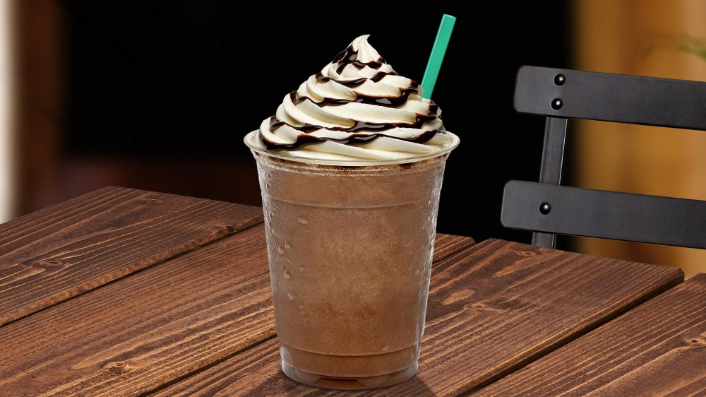

Café americano
El café americano, refiriéndose al café típico que se bebe en los Estados Unidos, es la mezcla de agua caliente y café procesado en una cafetera con filtro de café.
Frapuccino
El frappuccino es una marca registrada de bebidas de café congelados vendidos por la cadena de café Starbucks. Se compone de café u otro ingrediente de base, mezclado con hielo y otros ingredientes.
Moka
El café Moca es un café con leche un poco especial. El Moca es una variación del Capuchino, hecho con café espresso, leche vaporizada y chocolate.